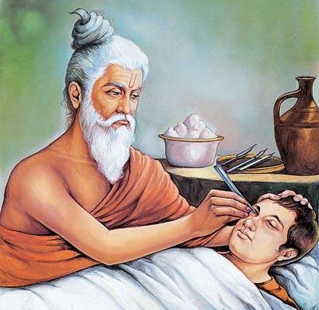

Sushruta, the father of surgery, pioneered cataract surgery in India around 600 BCE, laying the foundation of modern ophthalmology.

The Indian physician Sushruta, in his medical text Sushruta Samhita, described cataract surgery techniques as early as 600 BCE. His pioneering work established India as a leader in early surgical practices.
🎯 Quick Quiz:
Who is known as the father of surgery in India?